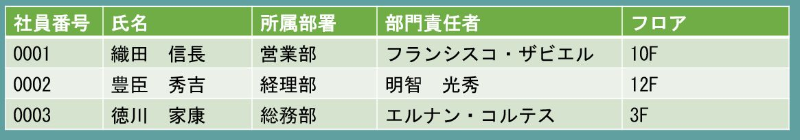

RDBMSとは
１．RDBMSとは何か
RDBMSはRelational Database Management Systemの略で、直訳すると関係データベース管理システムとなります。文字通り「関係データベースを管理するためのシステム」というのが最も単純なRDBMSに関する説明になりますが、関係データベースの概念はとても難しく、また利用するために完全に理解する必要もないことから、「関係データベースとはデータを表形式にして管理するデータベースのことである。」という説明がよくなされます。実用上はこの理解でまず問題ありませんので本稿でもこの前提で解説していくことにします。
そこでもう一度RDBMSとは何か？ということを考えると、この「データを表形式で管理するデータベース」であるところの関係データベースを管理するためのソフトウェアがRDBMSと言うことができます。最近ではNoSQL系のデータベースの発展によりデータベース＝関係データベースという図式は崩れてきていますが、依然としてほとんどの業務システムは関係データベースによって構築されていますし、やはりRDBMSはシステムエンジニアとして知っておくべき領域であると言えます。
NoSQLとは関係データベース以外のデータベース全般を指す用語でしたが、最近ではビッグデータを扱う文脈で登場することが多くなっているようです。ちなみにNoSQLとはNot Only SQLの略で、SQLが不要であると言っている訳ではありません。
２．表・行・列
関係データベースが表形式でデータを管理するデータベースであることは先に述べました。表は複数の行からなり、行は複数の列によって構成されます。表の中のある特定の1行を特定するための列を主キー（プライマリキー）と呼び、それ故に主キーに格納される値は1つの表の中で完全に一意でなければなりません。例を挙げて説明しましょう。下の図は関係データベースにおける表のイメージです。

この表はある会社の従業員の情報をあらわしたものですが、この中のある1行を特定する情報は何でしょうか？氏名は同じ会社に同姓同名の人がいるかもしれませんので完全に一意とは言い切れません。所属部署に至っては、同じ部署に複数の社員がいることは当たり前のことですのでこちらも行を一意に特定する情報にはなり得ません。では、社員番号はどうでしょうか？普通に考えて、同じ会社に同じ社員番号を持つ従業員は複数存在しないはずですから、この場合は社員番号が主キーということになりそうです。関係データベースでは1つの表に主キーが重複して存在することは許容されません。従って、上記の例では社員番号0001から0003までの値を持つ行を新たに挿入することはできないということになります。これを一意制約といいます。
ここまでは分かりやすさを優先して「表」、「行」、「列」という表現をしてきましたが、一般的には「表」をテーブル、「行」をレコード、「列」をカラムと呼んでいます。本稿でも以降の説明では「テーブル」、「レコード」、「カラム」という表現を用いることとします。
３．RDBMSにおけるテーブル
端的に言って、RDBMSにおけるテーブルとは同じ属性（カラム）を持つデータ（レコード）の集合ということになります。先ほどの従業員テーブルでは全てのデータは社員番号、氏名、所属部署の情報を持っています。これは1レコード目であろうと10000レコード目であろうと同じです。これは即ち、従業員テーブルに格納されるデータは全て同じ属性（列）を持っているということを意味します。テーブルとは同じ属性を持つデータの集合です。異なる属性を持つデータを1つのテーブルに収めようとしてはいけません。
しかしながら、従業員テーブルを眺めていると所属部署についてもう少し詳しい情報が知りたいということがあるかもしれません。しかし、従業員と部署では持つべき属性が異なることは明らかです。下の図のように従業員テーブルに無理やり部署の情報を収めてしまうこともできなくはありませんが、これではテーブルは同じ属性を持つデータの集合であるという前提が崩れてしまいます。これは明らかにダメな設計です。
なぜこれがダメかと言うと、ある社員が部署異動になった場合、本来であれば所属部署だけを更新すれば良いはずなのに従業員テーブルに部署の情報まで持たせてしまっているために、部署に紐づく情報（部門責任者やフロア）も所属部署の変更に合わせて更新しなければならなくなるからです。これは例えば織田信長氏を経理部に異動させたい場合、所属部署を営業部から経理部に更新するだけでなく、部門責任者をフランシスコ・ザビエルから明智光秀へ、フロアを10Fから12Fへ更新しなければならなくなるということです。システム開発者からするとこのようなテーブル設計は悪夢でしかありません。
４．テーブルと関連
先に述べたように、テーブルとは同じ属性を持つデータの集合です。だから従業員と所属部署を同じテーブルに収めてはいけません。それでは従業員テーブルから部門の詳細を確認したくなったらどのようにすれば良いのでしょうか。従業員と部署を同じテーブルにできない以上、2つに分ける他ありません。
先ほどの従業員テーブルに加えて部署テーブルを作成しました。部署テーブルの主キーは部署です（当然ですね）。部署が分かれば部署テーブルにおける1レコードを特定することができますので、従業員テーブルは部門責任者やフロアといった情報を持っている必要はありません。その代わりに部署テーブルの主キーを知っていますので、自分が持っていない情報は部署テーブルに聞けば良いのです。従業員テーブルは部署テーブルの主キーを知っていますから、いつでも部署テーブルから特定のレコードの情報を取り出すことができます。このようにあるテーブルが他のテーブルの主キーを保持することを外部キーといいます。外部キーによって別のテーブルの1レコードを特定することができますから、あたかも自分自身が他のテーブルの情報について全て知っているかのような振る舞いが可能になります。これをテーブルの関連といいます。
関係データベースはここまでで説明した主キー、外部キー、関連を正しく理解することができれば非常にシンプルで効率的な仕組みだということが理解できると思います。是非本項でこれらを正しく理解するようにしてください。